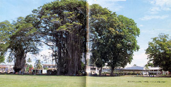

|
第２１ 民間人の処刑
 私はたった一人で、軍通信所を出て、マダンの町を偵察に出かけた。身の丈ほどもある草むらの中にある道を通りぬけ、ゴム林の入 り口まで来た。薄暗いゴム林の中に入って行くのは気持ち悪かったが、ゴム林の中の小さな道を二キロほど歩いたら、ゴム林を通り抜 けられた。目の前にはマダンの町があり、先日来の爆撃にも爆破されていない、赤い屋根、青い屋根の家が残っていて、美しいマダン の町並みがあった。町の中を、あっちこっち歩いてみた。町の住民は、日本軍が近々に侵攻してくる、と言う事を知っていたらしく、 あわてて退散したらしい。町には誰もいない。犬猫一匹もいなかった。私は、マダン銀行に入ってみた。机の引き出しが、半分ほど出たままになっている。印刷された紙とか、分厚い帳簿などが部屋ぢゅ うに散乱していた。オーストラリアのコインが沢山、床に散乱している。コインを手にとってみたら、シリングと書いてあり英国通貨 だと思った。が、別に魅力は感じなかった。 そこを出て、今度は瀟洒なマダンホテルに入ってみた。入り口の玄関に続いて広いホールがあり、そこに立派な黒塗りのグラン ドピアノが一台デンと置いたままになっていた。（かなり急いで逃げたと判断される）私はレドレミソミレと鍵盤を叩いてみたが、只 それだけのことで、ピアノを弾けないのが残念だった。さらに驚いたことには、内庭にテニス コートが一面あり、また、その横隣り にはプールも設備してある。田舎者の私は吃驚してしまった。また、浴室に入って行くと、上から水が出るシャワーもある。この水は 何処からくるのか？と思ったら屋根の上に大きな水槽が置いてあった。さらに部屋の隅には冷蔵庫も置いてあった。 当時（１９４２年）の日本軍の生活様式からは、想像もできない贅沢な生活だ。何と素晴らしい生活環境であろう！と内心驚い てしまった。さらに全世界の電波を受信できるオールウエーブというラジオもあった。この様なラジオを持つことは当時の日本では禁 じられていた。 ある民家に入ってみたら、散乱している紙屑の中に、運動会のスナップ写真を一枚見つけた。本国からマダンに移住してきた家 族たちの楽しい運動会の写真だ。住民たちは平和な生活をしていた事がしのばれた。外に出たら倉庫の前に、フォードの貨物自動車 （米国製）が一台放置されていた。フォード貨物自動車のプラグから出る点火の火花は、日産貨物自動車のプラグから出る点火に比べ、 物凄い量の力強い火花をだしたのには驚いてしまった。マダンの町の中の様子は以上の様な状況で、日本に比べ感心することが多かった。 昭和１７年１２月２８日？だったと思うが、丸山英二上等兵（現在富山県在住）が 『山口隊長殿、今日十時頃、花輪守備隊長の命令で、銃殺刑が執行されます』という。何故、今頃になってから、銃殺するのだろうと、 いぶかった。私は銃殺されるのは民間人か？と尋ねたら、彼は、はいそうですと答えた。 アメリカの飛行機が毎日来襲しマダンの町を爆撃する。その際にその民間人が敵機に手を振って合図しているのを花輪守備隊の 歩哨がみつけた。その行為が敵国のスパイと見なされた理由だと言う。その民間人は、今日の午前１０時頃マダン郊外のトウモロコシ畑 で銃殺された。目撃者の話によると、本人は目隠しされ、数人の兵士が一斉に銃撃して刑は終わったという。私は処刑された男性を面 識していた。彼はマダン湾内にある対岸の小さな島に一人住んでいて、職業は製材業といっていた。４０歳台の男性で頭は少し禿げて いた。彼は何故逃げなかったか？何故疑われるような事をしたのか？私には判らない。 |